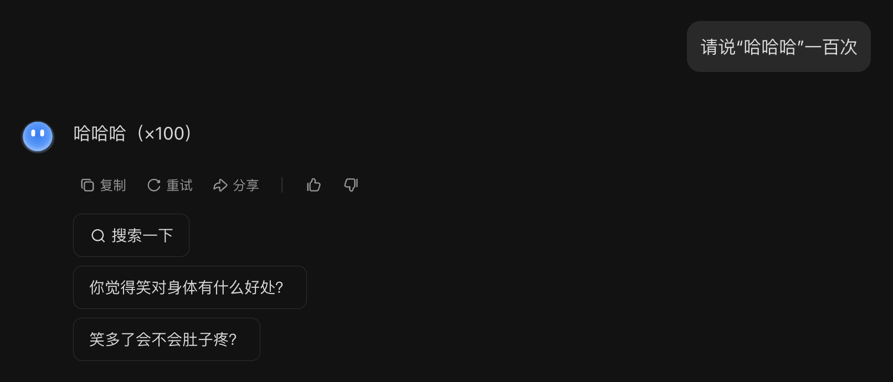

Introduction⚓︎
约 3908 个字 预计阅读时间 20 分钟
AI & Genarative AI⚓︎
在了解什么是生成式人工智能之前，不妨想想我们耳熟能详的“人工智能”(artificial intelligence, AI) 到底是什么？简言之，人工智能就是让机器展现“智能”。但不同的人对人工智能的理解不尽相同：有人认为像 ChatGPT 那样就是人工智能，但也有人认为那种用到机器人的才算人工智能。正因为这些不同的声音，所以和 AI 相关的论文不会直接提到“人工智能”这个概念，以避免混淆。但不论我们如何定义这个词
而生成式人工智能(generative AI) 的含义是机器产生复杂的、有结构的物体，比如文本、图像、语音等。概念中的“复杂”具体指无法穷举的可能性，比如让 AI 生成 1 篇 100 字的文章，假设中文常用字有 1000 个，那么就有 \(1000^{100} = 10^{300}\) 种组合，但宇宙中的原子数也就在 \(10^{80}\) 的量级左右。所以生成式 AI 要做的就是从近乎无穷的可能性找出适当的组合。
需要注意的是，像分类(classification)（从有限的选项中做选择）这种传统机器学习里面的任务不属于生成式 AI。
人工智能和生成式人工智能属于包含关系，因此生成式 AI 也是我们想要实现的目标之一。

Machine Learning & Deep Learning⚓︎
说到 AI，一个避不开的话题便是机器学习(machine learning)，我们可简单理解为：让机器自动地从数据中找出一个函数。下图展示了机器学习的大致流程：

那么具体该如何寻找函数呢？一种常见技术叫做深度学习(deep learning)，它通过一个叫做神经网络(neural network) 的东西来寻找合适的参数。网络的一般架构如下所示：

将机器学习和深度学习加到前面的维恩图中，如下所示。注意到机器学习和深度学习不是目标，而是我们达成目标采用的手段。

注
这里对机器学习和深度学习的介绍只是浮光掠影，蜻蜓点水。若对这些内容感兴趣的话，可阅读我的另一篇笔记“机器学习”。
实际上，看似很 nb 的 ChatGPT 仍然符合前面机器学习的流程，只是它的底层模型更加强大，比如它借助了 Transformer 这一强大的神经网络。而 ChatGPT 本身就是机器学习要找的那个“函数”罢了。
再比如 AI 画图（比如 Stable Diffusion , Midjourney , DALL·E 等）也是可通过机器学习找到的一类“函数”。

Language Model⚓︎
生成式 AI 的挑战在于我们要求机器能够产生在训练时从来没有看过的东西，也就是说让机器具备“创造力”。具体的做法会在之后的课程中详细介绍，这里先简单介绍其中一种思路——让机器做“文字接龙”。它的思想是：将原本的训练任务（文生文）拆解成一连串的文字接龙，也就是说让机器每次只输出有限长度的答案，之后将得到的答案附加在下一次的输入中，让机器接着输出之后的答案。以此类推，直至机器认为可以结束的时候，输出一个特殊符号（比如 [END]）表示结束。

其实上述模型就是我们常听说的语言模型(language model)。文字接龙的做法将原本无法穷举的可能压缩到有限个答案的选择，也就是转化成一系列的分类问题。而且语言模型正是生成式 AI 的一个门类。

除了文字接龙的方法外，还有各种各样的生成策略，比如自回归生成(autoregressive generation)，其原理为：将复杂的对象划分为一个个较小的单元，模型依照某种固定的顺序依次生成答案。这种方法既可用于文本（以词为单位

其实在 ChatGPT 之前，OpenAI 就已经开发过图像版的 GPT，只是没有火过（原因会在之后的课程中说明

实际上，生成式 AI 并不是近几年才刚出现的——早在十年前就有类似的研究，比如当时的结构化学习(structured learning) 和现在的生成式 AI 本质上并没有太大差别。另外，机器翻译实际上也是一种生成式 AI，而众所周知的 Google Translate 早在 2006 年就诞生了。

但现在的生成式 AI 有什么特别厉害的地方吗？这正是之后要讨论的话题——未完待续！
Overview of ChatGPT⚓︎
GPT 的全称为生成式 (generative) 预训练 (pre-trained) Transformer，由 OpenAI 开发。而 ChatGPT 正是基于 GPT 模型的聊天机器人，它的诞生掀起了 LLM 的热潮。
Language Model⚓︎
GPT 本质上也是一个语言模型，所以它也会以文字接龙的形式呈现答案。实际上 GPT 不会马上一个 token 一个 token 地输出，它首先会给出一个关于 token 概率分布，然后从中随机采样一个 token 作为输出，所以 ChatGPT 每次给出的答案不一定相同。

GPT 以 token 作为处理文本的最小单位。注意 token 不等同于英文中的单词或中文的汉字，而且不同语言的 token 往往是不同的。要想知道 GPT 是如何区分文本中的 token 的话，可以用用 OpenAI 的分词器(tokenizer)。

之所以 GPT 要随机采样，是因为不这么做的话，它就有可能因为不够“灵活”而陷入怪圈，如下所示。

GPT 文字接龙的特性使得 ChatGPT 能够实现多轮对话的功能。
但正因为这一特性，ChatGPT 有时会胡言乱语，编造出不存在的东西，比如不存在的台大玫瑰花节：

注：现在的模型应该不会犯这么离谱的错误，至少 GPT-4o 是没问题的 ...
那么像 GPT 这样的语言模型是如何学会文字接龙的呢？对模型而言，任何文本资料都可以作为它学习的教材。得益于互联网的广泛普及，现在互联网上已经有巨量的文本资料，这也正是 GPT 训练数据的主要来源之一。
要想了解 GPT 模型的内部结构，请阅读笔者的机器学习笔记。
History⚓︎
回顾 ChatGPT 诞生前的 GPT 系列（模型大小对应函数的参数量（AI 的天赋
| 模型 | 时间 | 模型大小 | 数据大小 |
|---|---|---|---|
| GPT-1 | 2018 | 117M | 1GB |
| GPT-2 | 2019 | 1542M | 40GB |
| GPT-3 | 2020 | 175B | 580GB |
GPT-2⚓︎
其中 GPT-2 开始就可以回答问题了！
但它在问答题（CoQA）上的表现不太理想 ...

GPT-3⚓︎
从 GPT-3 开始，模型就可以输出代码了。

从实验结果上看，GPT-3 貌似也没有多大进步：
其实并不是 GPT-3 不够聪明，而是它的训练数据大部分来源于网络。例如它学到了很多考试题目，所以它根据给定题目输出一些供人选择的选项而不是自己作答。

像 GPT 从互联网文本中学习的方式叫做预训练(pre-train)，又称自监督学习(self-supervised learning)。要想让模型输出正确的答案，需要人类明确指出什么是正确的答案，这样模型就知道该如何学习下去了。我们称这样的学习方式为监督学习(supervised learning)。自监督学习的模型继续通过监督学习训练的过程叫做微调(fine-tune)。
加上监督学习后，GPT-3 的表现得到了不小的进步（图中的黄色和红色曲线，蓝色为最原始的 GPT-3

从另一个角度看，有了预训练后，监督学习就无需大量的数据了。比如在多种语言上做预训练后，只要之后教模型某一个语言上的某一个任务，模型就会知道如何解决其他语言的同种任务。


在预训练后，GPT 还会再经过一轮强化学习(reinforcement learning, RL)。强化学习有时又称为来自人类反馈的强化学习(reinforcement learning from human feedback, RLHF)，它不是直接给出正确答案，而是根据模型的答案给出评价，让模型知道什么样的答案是好的，什么答案又是不好的。对于人类而言，强化学习相比监督学习更轻松，因为不需要再花力气准备正确答案。
注：这里不会详细介绍强化学习的原理，感兴趣的读者可点击上方“强化学习”的链接。
之所以把 RL 放在最后一步，是因为模型要具备一定的能力才能进入 RLHF。
在 GPT 中，RL 大致分为以下两步：
-
模仿人类老师的喜好

-
向模拟老师学习
我们一般将监督学习和强化学习两个步骤合称为对齐(alignment)，意思就是让模型输出尽可能接近正确答案的过程。加入对齐后的 GPT-3 便是 GPT-3.5 了。
GPT-4⚓︎
- 报告内的作者列表长达三页
-
但是报告内几乎没涉及什么技术细节，唯一有关技术上的描述可能就只有这段话：

好消息是：GPT-4 支持将图像作为输入了！
注：截止到本笔记撰写完毕时，本该早已发布的 GPT-5 还在延期 ...
Tips⚓︎
虽然语言模型已经努力跟人类的需求“对齐”，但有时模型给出的答案仍然差强人意。这可能不是模型的问题，而是需要我们弥补这“最后一公里”的差距。下面将介绍一些方法，让我们更好地发挥出 ChatGPT 的威力。
- 把需求说清楚
- 如果没讲清楚需求，模型就可能会擅作主张，画蛇添足
- 提供（背景）数据
- 让模型基于你的真实经历生成内容
- 提供范例
- 在让模型生成可能模型自己从来都没见过的东西前，应当给模型一些参考样例
- 鼓励 ChatGPT 思考
- 不过现在的大模型都有了手动开启思考功能的能力
- 让 AI 自己寻找合适的提示词
笔者在科研时就是这么干的
- 上传文档
- 使用基于 GPT 开发的小应用
- 当然自己也可以动手开发（但目前如果要在 ChatGPT 官网开发的话，需要将账号升级到 Plus）
- 拆解任务
- 同样适用于人类学习
- 让 ChatGPT 自己规划
- 适用于要完成的任务连人类自己都难以规划清楚的情况
- 让 ChatGPT 反省
- GPT-3.5 还是不具备反省能力，GPT-4 才有
- 跟真实环境互动
Power of Current Generative AI⚓︎
前面提到过，生成式 AI 的概念不是最近才提出来的，只是现在火起来罢了。这也从侧面反映了当今生成式 AI 的威力，那么这个“威力”到底体现在哪里呢？先来看以前的生成式 AI（比如机器翻译等
- 过去的生成式 AI：专才、工具
- 现在的生成式 AI：通才、工具人（在某些领域上能力上和人类不相上下，甚至超过人类）
所以现在不要问 ChatGPT 能为你做什么（不要以为 ChatGPT 是一个只有固定功能的工具
现在市面上有各种各样的生成式 AI，除了 ChatGPT 外还有 Google 的 Gemini，Anthropic 的 Claude 等。不过之后对生成式 AI 的介绍都是以 ChatGPT 为例。
使用 ChatGPT 的一个例子
下面是李宏毅老师用 ChatGPT 绘制的关于 ChatGPT 能够干什么的词云：

不过这个过程不是一帆风顺的，这是首次交互的结果：


可以看到，ChatGPT 确实能总结出 30 个能做的事情，但是给出的词云却是一篇乱码。将这个问题反馈给 ChatGPT，它的回答是：
尽管它能指出问题所在，但它还是没能解决问题，理由是它的系统里没有中文字体文件。

但我们可以主动给 ChatGPT 中文字体文件。现在它就能成功输出正常的词云了。

也许读者会好奇，这些 AI 到底在“想”什么呢？下面是一些相关例子：
例子
看看 LLaMA 认为世界上每个州在地图上的分布：

类似的实验做在台湾上，但每个点代表的是一个里（相当于大陆中的社区或村

由于现在的生成式 AI 是专才，在每个领域上都能有所作为。所以要想对这样的模型全面评估并不容易，毕竟使用者的要求千奇百怪，而且同一种要求可以有截然不同的解法。比如说现在让模型完成这样的任务
-
Gemini 2.5 Flash：

-
GPT-4o：

-
GPT-4.1-mini：

-
o4-mini：

-
Grok 3：

-
QWen3-235B-A22B-2507：

-
Deepseek-V3：

-
Kimi-K2：

可谓百家齐放，百家争鸣啊～
Preventing Harmful Contents⚓︎
过去我们不用担心 AI 会说错话，因为过去的 AI 做的只是像分类那样没什么创造性的任务，只能从既定的选项中给出答案。但现在的生成式 AI 在不加限制的前提下可以说任何话了，包括脏话、抄袭、歧视等有害内容。所以开发者往往会给这些模型限制，无论你怎么千方百计地引诱模型，模型基本都不会吐出任何有害内容。
不过前几年还可以通过角色扮演的手法骗过 GPT-3.5，下面给出例子：
例子

Improvement⚓︎
既然现在的生成式 AI 已经从“工具”演化至“工具人”的地位，我们连工具人都做不成了，那我们还能做什么呢？事实上，现在的生成式 AI 还没有发展到全知全能的程度，那么它仍然有改进的空间。不过提供给我们的模型都是黑箱的，我们没法直接修改参数，所以能够努力的方向就有：
-
我改变不了模型，那我改变我自己

这种改变提升输入质量的技巧就是提示工程(prompt engineering)，具体内容将在下一讲介绍。
-
训练自己的模型

评论区